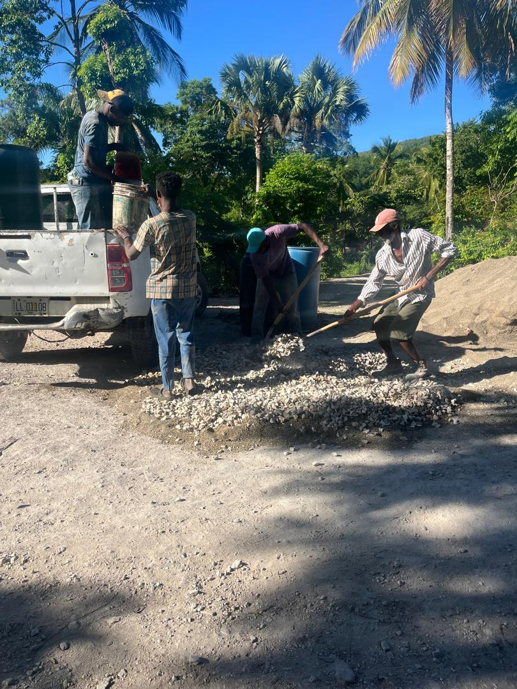
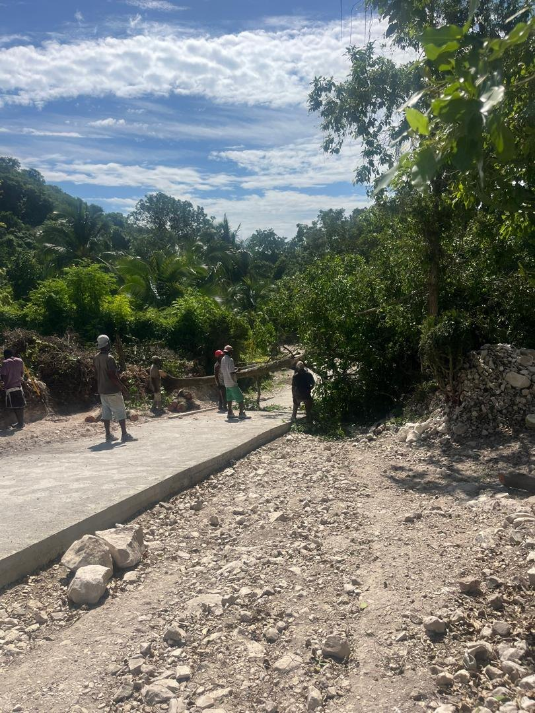
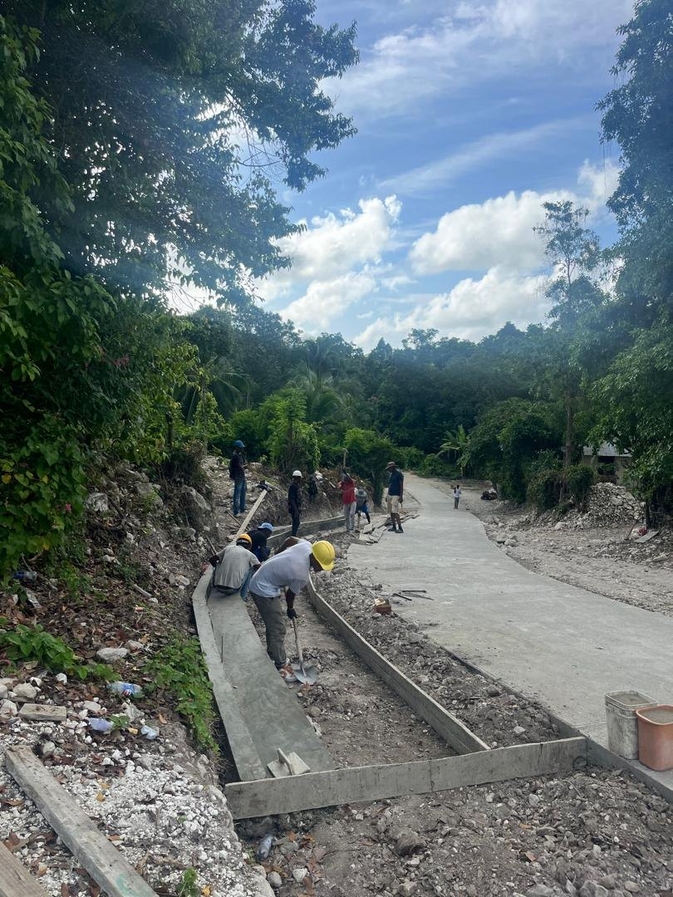

Aller au contenu
Phase 1 · Morne Charmit · 21 novembre 2026
Labalèn, Haïti
Ensemble, faisons vivre Labalèn.
Les habitants et les familles de la diaspora travaillent ensemble pour améliorer le quotidien à Labalèn, selon les priorités définies sur place.
Découvrir KPL
D’où viennent nos familles
Labalèn est le lieu de vie de ses habitants et fait partie de l’histoire de nombreuses familles établies à l’étranger. Konbit Pou Labalèn s’appuie sur ces liens pour améliorer la vie quotidienne dans la communauté.
En savoir plus sur Labalèn et KPL
Agrandir l’arbre des familles
Des routes pour Labalèn
Suivez les travaux à Morne Charmit et découvrez ce qui est prévu près de l’école.

Phase 1 · Morne Charmit
Participez où que vous soyez
Si vos parents ou grands-parents sont de Labalèn, vous pouvez contribuer avec vos compétences, vos histoires et vos liens familiaux.
Participer
Men anpil,
Phase 1 · Morne Charmit
Quatre jours sur la route
Sélectionnez une date pour changer de photo et lire les notes de terrain.

20 novembre 2026
21 novembre 2026
24 novembre 2026

25 novembre 2026
Photo précédente
Photo suivante


 Agrandir l’arbre des familles
Agrandir l’arbre des familles